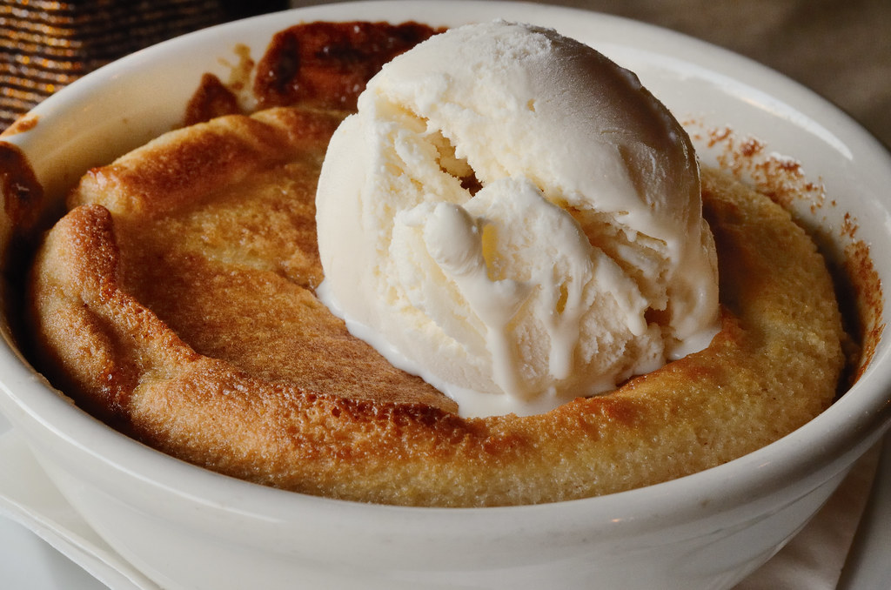

Peach Cobbler

Description
Peach Cobbler is a great dessert to make if you're craving a cozy, home-made sweet treat. This recipe is easy to make from scratch, and it works with both fresh and canned peaches. This recipe takes about an hour to make, but it's definitely worth the wait!
Ingredients
- 5 Peaches, peeled, cored, and sliced (about 4 cups)
- 3/4 cup Granulated Sugar
- 1/4 teaspoon Salt
For the Batter:
- 6 tablespoons Butter
- 1 cup All-purpose Flour
- 1 cup Granulated Sugar
- 2 teaspoons Baking Powder
- 1/4 teaspoon Salt
- 3/4 cup Milk
- Ground Cinnamon
Steps
- Add the sliced peaches, sugar, and salt to a saucepan and stir to combine.
- Cook on medium heat until the sugar is dissolved. Then, remove from the heat and set aside.
- Preheat the oven to 350 degrees Fahrenheit. Slice the butter into pieces and add to a 9x13 inch baking dish. Place the pain in the oven while it preheats, to allow the butter to melt. Once melted, remove the pan from the oven.
- In a large bowl, mix together the flour, sugar, baking powder, and salt. Then, stir in the milk until combined. Pour the mixture into the pan over the melted butter, and smooth it into an even layer.
- Spoon the peaches and juice over the batter. Sprinkle cinnamon generously over the top.
- Bake at 350 degrees for about 38-40 minutes.